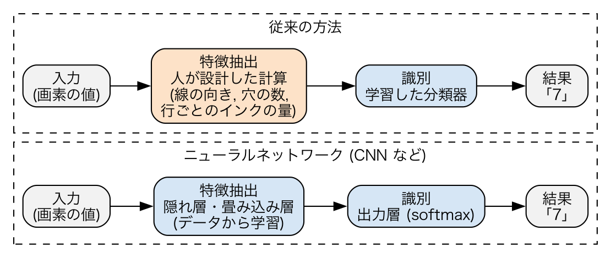
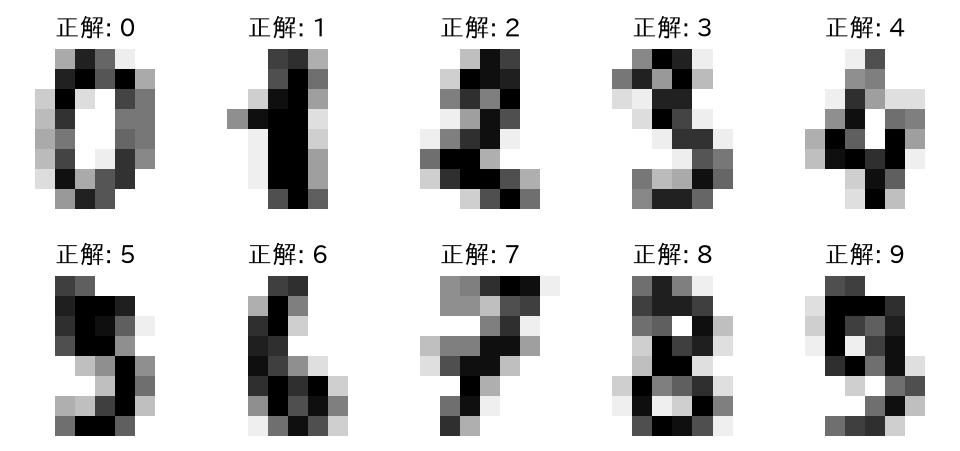
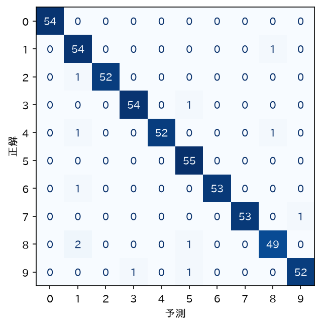
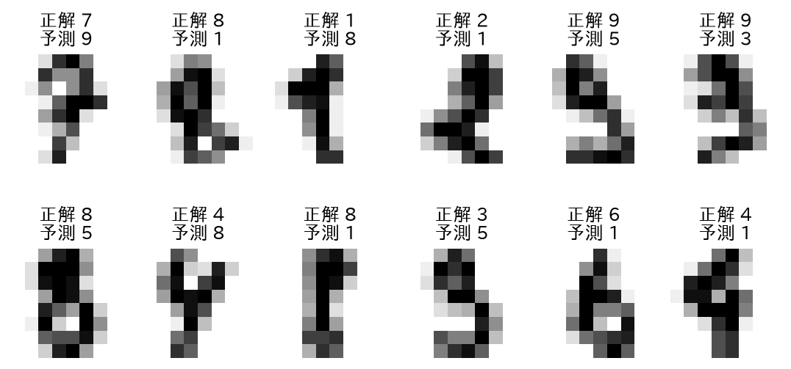
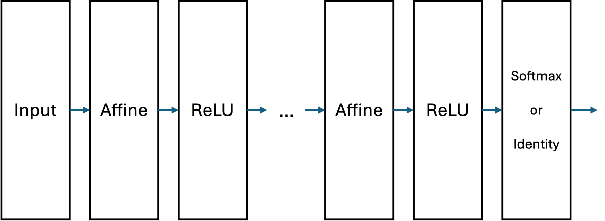
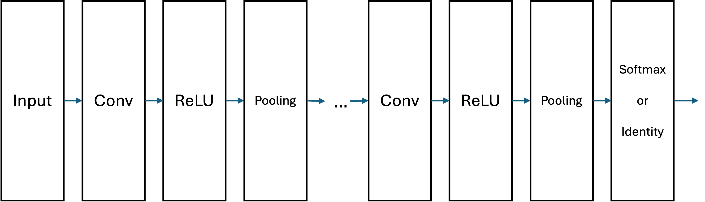
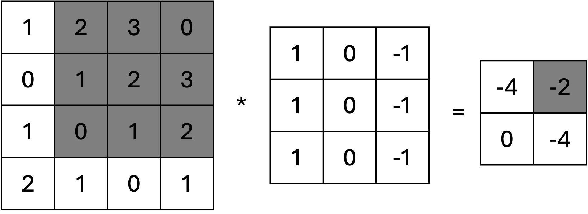
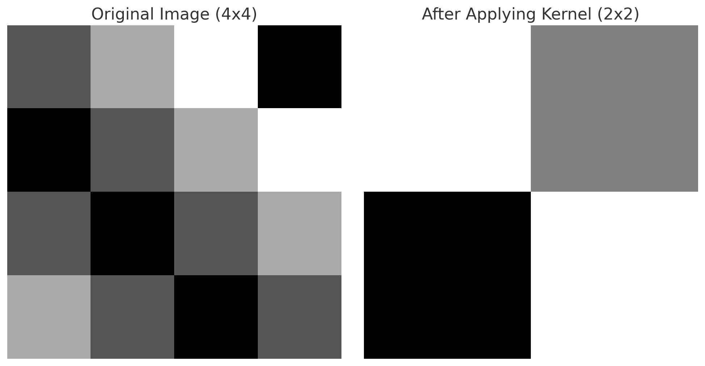
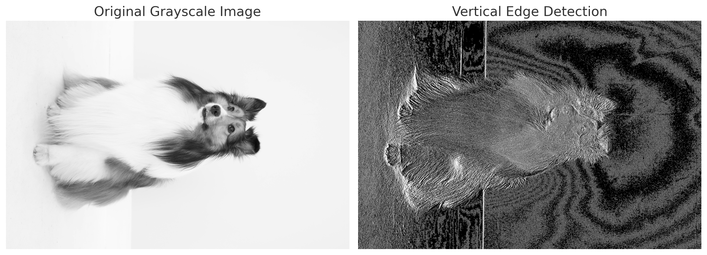
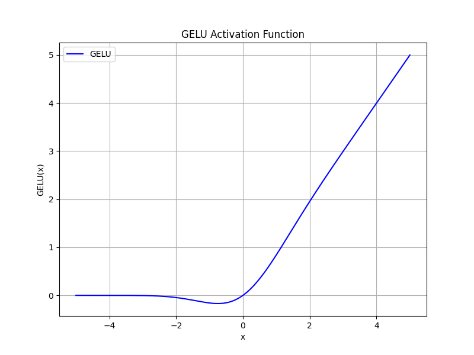

認識技術と手書き数字の認識 / 畳み込みニューラルネットワーク
画像認識
画像や音声から, そこに写っているものや話された言葉を当てる技術を認識といいます. 仕組みを学んだニューラルネットワークを, BERT による自然言語処理に続いて画像や音声の認識で動かします. 手書き数字の認識を scikit-learn で試した後, 画像認識で広く使われる畳み込みニューラルネットワークの仕組みを確かめ, 顔の画像から年代を当てるモデルを PyTorch で学習させます. 音声認識にも画像認識と同じ考え方を使えます.
認識技術の活用事例
認識の技術は, 身近なところで多く使われています.
| 分野 | 認識するもの | 入力 |
|---|---|---|
| 郵便 | はがきや封筒に手書きされた郵便番号 | 郵便物を撮影した画像 |
| 事務 | 書類, レシート, 名刺の文字 (OCR, 光学文字認識) | 紙をスキャンした画像 |
| 本人確認 | 登録された本人の顔かどうか (顔認証) | カメラで撮影した顔の画像 |
| 音声アシスタント | 話しかけた言葉 (音声認識) | マイクで録音した音 |
| 医療 | X 線や CT の画像に写った病変の候補 | 医療用の画像 |
| 自動車 | 歩行者, 他の車, 道路標識 | 車載カメラの画像 |
どの事例も, 画像や音という数値の集まりを入力にして, 「どの数字か」「本人か他人か」「どの言葉か」のように, あらかじめ決まった選択肢 (クラス) のどれにあたるかを答えています. 形のうえでは教師あり分類と同じ問題です. ただし入力は, 列ごとに意味の決まった表のデータではなく, 大量の画素の値や音の振幅の並びです.
パターン認識: 特徴抽出と識別
画像や音声のようなデータを, 決まったクラスのどれかに振り分けることをパターン認識といいます. パターン認識は, 次の 2 つの段階に分けて考えます.
- 特徴抽出: 入力から, クラスを見分けるのに役立つ値 (特徴) を取り出す.
- 識別: 取り出した特徴から, どのクラスにあたるかを決める. 決定木のような分類器が担う.

特徴抽出が要るのは, 画素の値そのものがクラスとの対応を直接表していないからです. 同じ「7」でも, 書く位置が 1 画素ずれるだけで, すべての画素の値が変わります. 一方で「線で囲まれた穴がいくつあるか」は, 位置がずれても変わりません. 穴は「0」「6」「9」に 1 つ, 「8」に 2 つあり, 「1」「7」にはありません. このように, 書き方の違いでは変わりにくく, クラスによって違う値が, 識別に役立つ特徴です.
従来のパターン認識では, 図の上段のように, 何を特徴にするかを人が考えて設計しました. 穴の数, 線の向き, 行ごとのインクの量などです. 識別の部分は学習で決めますが, 認識の性能は, 人が設計した特徴の良し悪しで大きく左右されました.
ニューラルネットワークでは, 図の下段のように, 特徴抽出の部分も学習で決めます. 隠れ層の重みは, 識別に役立つ特徴を取り出すように, 訓練データから決まります. 画像向けの畳み込みニューラルネットワーク (CNN) では, 畳み込み層のフィルタがこの役割を担います. 畳み込みニューラルネットワークで説明する縦のエッジを取り出すフィルタは, 人が設計した特徴抽出の一例です. CNN はこのフィルタの値を人が決めずに, 学習で決めます.
手書き数字の認識
パターン認識の流れを, 手書き数字の画像で試します. ニューラルネットワークの例で使った手書き数字の認識を, scikit-learn のニューラルネットワークで実際に行います.
この節では次のライブラリを使います. uv add しておいてください.
uv add numpy matplotlib matplotlib-fontja scikit-learn数字の画像データ
scikit-learn には, 手書きの数字 0 から 9 の画像 1797 枚が付属しています. 各画像は縦 8 画素, 横 8 画素で, 各画素の値はインクの濃さを 0 (白) から 16 (黒) で表します. load_digits で読み込めるので, ダウンロードは要りません.
import numpy as np
import matplotlib.pyplot as plt
import matplotlib_fontja
from sklearn.datasets import load_digits
digits = load_digits()
print(digits.images.shape) # (枚数, 縦, 横)
print(digits.images[0]) # 1 枚目の画像の画素の値
print(digits.target[:10]) # 最初の 10 枚の正解
"""
(1797, 8, 8)
[[ 0. 0. 5. 13. 9. 1. 0. 0.]
[ 0. 0. 13. 15. 10. 15. 5. 0.]
[ 0. 3. 15. 2. 0. 11. 8. 0.]
[ 0. 4. 12. 0. 0. 8. 8. 0.]
[ 0. 5. 8. 0. 0. 9. 8. 0.]
[ 0. 4. 11. 0. 1. 12. 7. 0.]
[ 0. 2. 14. 5. 10. 12. 0. 0.]
[ 0. 0. 6. 13. 10. 0. 0. 0.]]
[0 1 2 3 4 5 6 7 8 9]
"""1 枚目の画像は, 8 行 8 列の数値の表です. 値の大きい画素が輪のように並んでいて, 「0」の形が読み取れます. 画像として描くと, 次のようになります.
fig, axes = plt.subplots(2, 5, figsize=(8, 3.6))
for i, ax in enumerate(axes.flat):
ax.imshow(digits.images[i], cmap='gray_r') # 値が大きいほど黒く描く
ax.set_title(f'正解: {digits.target[i]}')
ax.axis('off')
plt.show()
plt.close()
8 × 8 画素と粗い画像ですが, どの数字かは人の目で見分けられます. この 64 個の画素の値から数字を当てるのが, 手書き数字の認識です.
ニューラルネットワークによる識別
scikit-learn の MLPClassifier は, 全結合層を重ねたニューラルネットワーク (多層パーセプトロン, MLP) の分類器です. 入力層に 64 個の画素の値を並べ, 隠れ層で特徴を取り出し, 出力層の softmax 関数で 0 から 9 のそれぞれである確率を出します. 隠れ層の活性化関数は ReLU で, 重みは交差エントロピー損失を小さくするように誤差逆伝播法で学習します (ニューラルネットワークの学習).
全結合層には数値を 1 列に並べて入力するので, 8 × 8 の画像を 64 個の値の並びとして扱います. digits.data は, 各画像をこの形に並べ直したものです. 画素の値は 16 で割って 0 から 1 の範囲にそろえます. 入力の値の範囲が大きいと, 学習が不安定になりやすいからです.
画像を訓練データとテストデータに分け, 訓練データだけで学習します.
from sklearn.model_selection import train_test_split
from sklearn.neural_network import MLPClassifier
X = digits.data / 16 # 64 個の画素の値を 0 から 1 の範囲にする
y = digits.target
# 7割を訓練データ, 3割をテストデータにする (数字ごとの割合を両方で揃える)
X_train, X_test, y_train, y_test = train_test_split(
X, y, test_size=0.3, random_state=0, stratify=y)
print(X_train.shape, X_test.shape)
# 隠れ層にニューロンを 64 個置いたニューラルネットワーク
mlp = MLPClassifier(hidden_layer_sizes=(64,), max_iter=1000, random_state=0)
mlp.fit(X_train, y_train)
pred = mlp.predict(X_test)
print((pred == y_test).mean()) # 正解率
"""
(1257, 64) (540, 64)
0.9777777777777777
"""hidden_layer_sizes=(64,) は, 隠れ層を 1 層にしてニューロンを 64 個置くという指定です. max_iter は学習の繰り返しの上限, random_state は重みの初期値を決める乱数の固定です. 訓練データ 1257 枚で学習したモデルは, テストデータ 540 枚のうち 97.8% の数字を正しく認識しました.
この節に対応する演習は, Exercise DSP11-1とExercise DSP11-2です.
混同行列と誤認識した画像
混同行列で, どの数字をどの数字と間違えたかを確かめます. 行が正解, 列が予測で, 10 クラスなので 10 × 10 の表になります.
from sklearn.metrics import confusion_matrix, ConfusionMatrixDisplay
cm = confusion_matrix(y_test, pred)
print(cm)
"""
[[54 0 0 0 0 0 0 0 0 0]
[ 0 54 0 0 0 0 0 0 1 0]
[ 0 1 52 0 0 0 0 0 0 0]
[ 0 0 0 54 0 1 0 0 0 0]
[ 0 1 0 0 52 0 0 0 1 0]
[ 0 0 0 0 0 55 0 0 0 0]
[ 0 1 0 0 0 0 53 0 0 0]
[ 0 0 0 0 0 0 0 53 0 1]
[ 0 2 0 0 0 1 0 0 49 0]
[ 0 0 0 1 0 1 0 0 0 52]]
"""
ConfusionMatrixDisplay(cm).plot(cmap='Blues', colorbar=False)
plt.xlabel('予測')
plt.ylabel('正解')
plt.show()
plt.close()
誤りは全部で 12 枚です. 列の方向に見ると, 「1」の列に誤りが 5 枚 (正解が 2, 4, 6 の各 1 枚と, 8 の 2 枚) 集まっていて, 「1」と答える誤りが最も多いと分かります. 「8」と「1」は, 正解 8 を 1 と答えた 2 枚と, 正解 1 を 8 と答えた 1 枚があり, 両方向に間違えています. 実際に誤認識した画像を表示して, 間違えた理由を探ります.
wrong = np.where(pred != y_test)[0] # 誤認識したテストデータの番号
print(len(wrong))
"""
12
"""
fig, axes = plt.subplots(2, 6, figsize=(9, 4.2))
for ax in axes.flat:
ax.axis('off')
for ax, i in zip(axes.flat, wrong):
ax.imshow(X_test[i].reshape(8, 8), cmap='gray_r')
ax.set_title(f'正解 {y_test[i]}\n予測 {pred[i]}')
plt.show()
plt.close()
X_test[i].reshape(8, 8) は, 64 個の値の並びを 8 × 8 の表に戻しています. 誤認識した画像には, 人が見ても迷う形が多く含まれます. 「1」と答えた「8」のうち 1 枚 (下段の左から 3 枚目) は, 輪がつぶれて縦の太い線に近くなっています. 「9」を「5」や「3」と答えた画像は, 上の輪がはっきり閉じておらず, 「5」や「3」に近い形です. 形の似た数字の組 (8 と 1, 3 と 5 と 9) で誤りが起きやすいという傾向は, モデルの評価の混同行列の例で示した「4」と「9」の取り違えと同じ種類の弱点です. 8 × 8 画素では細かい形が失われるので, 解像度の高い画像を使えば減らせる誤りもあります.
この節に対応する演習は, Exercise DSP11-2です.
人が設計した特徴との比較
MLP には画素の値をそのまま入力し, 特徴は隠れ層が学習で取り出しました. パターン認識: 特徴抽出と識別の図の上段のように, 人が設計した特徴を使うとどうなるかを比べます. 特徴として, 各行のインクの量 (その行の画素の値の合計) 8 個と, 各列のインクの量 8 個の, 合わせて 16 個の値を使います. 「1」なら中央の列にインクが集まり, 「0」なら左右の列に分かれる, という違いを捉える特徴です.
images = digits.images / 16
# 各行のインクの量 (8 個) と各列のインクの量 (8 個) を特徴にする
features = np.hstack([images.sum(axis=2), images.sum(axis=1)])
print(features.shape)
F_train, F_test, y_train, y_test = train_test_split(
features, y, test_size=0.3, random_state=0, stratify=y)
mlp_f = MLPClassifier(hidden_layer_sizes=(64,), max_iter=2000, random_state=0)
mlp_f.fit(F_train, y_train)
print((mlp_f.predict(F_test) == y_test).mean())
"""
(1797, 16)
0.9351851851851852
"""分け方と分類器は同じにして, 入力だけを 16 個の特徴に替えました. 正解率は 0.935 で, 画素の値をそのまま入力した 0.978 より下がります. 行と列の合計に畳むと, どの行のどの位置にインクがあるかという組み合わせの情報が失われるからです. 人が設計した特徴は, 設計者が気付いた違いしか捉えられません. 画素の値をそのまま入力して特徴を学習させる方が, この例では良い結果になりました.
文字認識
文字の認識も, 数字の認識と同じ流れで行えます. 違いは, クラスの数と, 入力の画像の作り方です.
クラスの数は, 数字なら 10, アルファベットなら大文字と小文字で 52 です. 日本語では, ひらがな, カタカナに加えて漢字が数千種類あるので, 数千クラスの分類になります. クラスが増えるほど, 形の似た文字の組 (「力」と「カ」, 「口」と「ロ」, 「未」と「末」) も増えます. 手書き数字の「8」と「1」の取り違えと同じ種類の誤りが, 数千のクラスの間で起こりえます.
実際の文書の OCR では, 1 文字ずつの画像が最初から用意されているわけではありません. 文書の画像から文字の並んだ行の位置を見つけ, 行を 1 文字ずつに切り出すか, 行の画像全体を文字の並びとして読み取ります. 読み取った文字の並びを, 単語や文として自然かどうかで補正することもあります. 「未来」と「末来」のように形の似た候補があるとき, 単語として存在する「未来」を選ぶ, という補正です.
演習
Exercise DSP11-1
提出ファイル dsp11-1.py
分類器を変えた手書き数字の認識
対応する節: ニューラルネットワークによる識別
ニューラルネットワークによる識別と同じデータと分け方 (test_size=0.3, random_state=0, stratify=y) で, 次の 5 つの分類器を学習させ, テストデータでの正解率を比べてください. 最も正解率の高い分類器と低い分類器を挙げ, 低い分類器の正解率が低い理由を考えてください.
- ロジスティック回帰 (
LogisticRegression(max_iter=1000), ロジスティック回帰の解説) - 決定木 (
DecisionTreeClassifier(random_state=0), 決定木の解説) - ランダムフォレスト (
RandomForestClassifier(random_state=0)) - サポートベクターマシン (
SVC()) - 手書き数字の識別に使った MLP (
MLPClassifier(hidden_layer_sizes=(64,), max_iter=1000, random_state=0))
提出ファイル名: dsp11-1.py
回答例
from sklearn.datasets import load_digits
from sklearn.model_selection import train_test_split
from sklearn.linear_model import LogisticRegression
from sklearn.tree import DecisionTreeClassifier
from sklearn.ensemble import RandomForestClassifier
from sklearn.svm import SVC
from sklearn.neural_network import MLPClassifier
digits = load_digits()
X = digits.data / 16
y = digits.target
X_train, X_test, y_train, y_test = train_test_split(
X, y, test_size=0.3, random_state=0, stratify=y)
models = {
'ロジスティック回帰': LogisticRegression(max_iter=1000),
'決定木': DecisionTreeClassifier(random_state=0),
'ランダムフォレスト': RandomForestClassifier(random_state=0),
'SVM': SVC(),
'MLP': MLPClassifier(hidden_layer_sizes=(64,), max_iter=1000, random_state=0),
}
for name, model in models.items():
model.fit(X_train, y_train)
print(name, round(model.score(X_test, y_test), 3))
"""
ロジスティック回帰 0.97
決定木 0.837
ランダムフォレスト 0.97
SVM 0.987
MLP 0.978
"""最も正解率が高いのは SVM (0.987), 最も低いのは決定木 (0.837) です. 決定木は, 1 回の分岐で 1 つの画素の値だけを見て「ある値以下か」を判定します. 数字の形は多くの画素の組み合わせで決まり, 同じ数字でも書く位置がずれると, 見るべき画素が変わります. 1 画素ずつの分岐を重ねる決定木は, 訓練データの書き方に合わせた分岐を覚え込みやすく, 新しい書き方の数字に通用しにくくなります. 決定木を多数組み合わせるランダムフォレストでは, この弱点が補われ, 正解率が 0.97 まで上がります.
Exercise DSP11-2
提出ファイル dsp11-2.py
隠れ層の大きさと誤認識の傾向
対応する節: ニューラルネットワークによる識別, 混同行列と誤認識した画像
手書き数字の識別に使った MLP の隠れ層のニューロンの数を 4, 8, 16, 64 と変えて学習させ (max_iter=3000, random_state=0 とします), それぞれについて次の 2 つを求めてください.
- テストデータでの正解率と, 誤認識した枚数
- 混同行列で, 誤りの多い (正解, 予測) の組の上位 3 つ
ニューロンの数によって正解率と誤りの傾向がどう変わるかを説明してください.
提出ファイル名: dsp11-2.py
回答例
import numpy as np
from sklearn.datasets import load_digits
from sklearn.model_selection import train_test_split
from sklearn.neural_network import MLPClassifier
from sklearn.metrics import confusion_matrix
digits = load_digits()
X = digits.data / 16
y = digits.target
X_train, X_test, y_train, y_test = train_test_split(
X, y, test_size=0.3, random_state=0, stratify=y)
for n in [4, 8, 16, 64]:
mlp = MLPClassifier(hidden_layer_sizes=(n,), max_iter=3000, random_state=0)
mlp.fit(X_train, y_train)
pred = mlp.predict(X_test)
cm = confusion_matrix(y_test, pred)
np.fill_diagonal(cm, 0) # 正しく分類した数を 0 にして誤りだけ残す
# 誤りの多い (正解, 予測) の組を 3 つ
top = np.dstack(np.unravel_index(np.argsort(cm, axis=None)[::-1][:3], cm.shape))[0]
pairs = [f'{a}→{b}: {cm[a, b]}' for a, b in top]
print(n, round((pred == y_test).mean(), 3), cm.sum(), pairs)
"""
4 0.935 35 ['8→9: 6', '9→3: 4', '8→1: 4']
8 0.957 23 ['2→3: 3', '8→1: 3', '4→8: 2']
16 0.972 15 ['8→1: 3', '4→1: 2', '5→8: 1']
64 0.978 12 ['8→1: 2', '6→1: 1', '3→5: 1']
"""各行は, ニューロンの数, 正解率, 誤認識した枚数, 誤りの多い組の上位 3 つです. 誤りが 1 枚ずつの組が複数あるときは, そのうちのどれが表示されるかは並べ替えの順序で決まります.
ニューロンの数を増やすほど正解率は上がり, 誤認識は 35 枚から 12 枚に減ります. 隠れ層のニューロンの数は, 取り出せる特徴の数にあたります. 4 個では 64 画素の情報を 4 つの値に押し込むことになり, 数字を見分けるのに必要な形の違いを表しきれません. 誤りの組を見ると, どの大きさでも「8」を「1」と答える誤りが上位にあり, ニューロンが 4 個のときは「8」と「9」, 「9」と「3」のように, 輪や曲線の一部を共有する数字の取り違えが目立ちます. ニューロンを増やすと, こうした形の似た数字の間の細かな違いも捉えられるようになり, 誤りが減ります.
畳み込みニューラルネットワーク
畳み込みニューラルネットワーク
手書き数字の認識では, 画像を 64 個の値の並びにして全結合層に入力しました. 画像認識や音声認識のニューラルネットワークでは, 全結合層だけでなく, 画像の形を活かす畳み込みニューラルネットワーク (Convolutional Neural Network, CNN) が広く使われています.
基本的なニューラルネットワークは, 入力層, 全結合層と ReLU などの活性化関数による隠れ層, softmax 関数などによる出力層から構成されます.

全結合層 (Affine Layer) では, 入力のすべてのニューロンが次の層のすべてのニューロンと結合します. そのため, 入力はすべて 1 列のベクトルに並べ直します. しかし画像データは, 縦, 横, チャンネル (RGB なら 3 チャンネル) の 3 次元の構造を持ちます. 例えば, 28 × 28 画素のグレースケール画像 (1 チャンネル) は, 28 \times 28 \times 1 という構造です.
画像を 1 列に並べ直すと, どの画素とどの画素が隣り合っているかという空間的な構造の情報が使われなくなります. 手書き数字を識別する MLP にとって, 左上の画素と右隣の画素は, 左上の画素と右下の画素と同じく「64 個のうちの 2 つ」にすぎません. そのため, 近くの画素がつくる線や角のような局所的な特徴を捉えにくくなります.
そこで CNN では, 畳み込み層 (Convolution Layer) とプーリング層 (Pooling Layer) を加えて, データの空間的な構造を取り込みます.

畳み込み層 (Convolution Layer)
畳み込み層は, 入力データ I にフィルタ (カーネル) K を適用して, 特徴マップ F を生成します. 畳み込みの演算は次の式で表されます.
F(x, y) = \sum_{i=1}^{m} \sum_{j=1}^{n} I(x+i, y+j) \cdot K(i, j)
I(x, y): 入力画像の画素の値 (例: グレースケール画像なら 0 から 255 の値), K(i, j): フィルタ (カーネル) の要素, m \times n: フィルタの大きさ (例: 3 \times 3).
フィルタを画像の上で少しずつずらしながら適用することで, 画像の中の特徴 (エッジや模様など) を取り出します.
例として, 4 \times 4 のグレースケール画像を考えます. 各要素は 0 から 255 の画素の値を持ちます.
入力画像 I:
I = \begin{bmatrix} 1 & 2 & 3 & 0 \\ 0 & 1 & 2 & 3 \\ 1 & 0 & 1 & 2 \\ 2 & 1 & 0 & 1 \end{bmatrix}
フィルタ K:
K = \begin{bmatrix} 1 & 0 & -1 \\ 1 & 0 & -1 \\ 1 & 0 & -1 \end{bmatrix}
このフィルタは, 垂直方向のエッジ (輪郭) を検出するカーネルとしてよく使われます.
畳み込み演算の手順
畳み込み演算では, フィルタ K を入力画像 I に適用し, 次の手順を繰り返します.
- フィルタ K を入力画像 I の一部 (局所領域) に重ねます.
- 重なった要素同士を掛け算し, その結果を合計します.
- 合計値を特徴マップ F の対応する位置に記録します.
- フィルタをストライド (移動量) の分だけずらし, 同じ計算を繰り返します.
ストライドは 1 (1 画素ずつ移動) とします. 入力画像が 4 \times 4, フィルタの大きさが 3 \times 3, ストライドが 1 の場合, 出力の特徴マップの大きさは次の式で計算されます.
F_{\text{Size}} = \left( I_{\text{Size}} - K_{\text{Size}} \right) / \text{Stride} + 1
F_{\text{Size}} = (4 - 3) / 1 + 1 = 2
したがって, 出力の特徴マップ F の大きさは 2 \times 2 になります.
ステップ 1: フィルタを左上に重ねる
入力画像の左上の 3 \times 3 の領域:
\begin{bmatrix} 1 & 2 & 3 \\ 0 & 1 & 2 \\ 1 & 0 & 1 \end{bmatrix}
フィルタ K を適用します.
F(1, 1) = \begin{bmatrix} 1 & 2 & 3 \\ 0 & 1 & 2 \\ 1 & 0 & 1 \\ \end{bmatrix} \cdot \begin{bmatrix} 1 & 0 & -1 \\ 1 & 0 & -1 \\ 1 & 0 & -1 \end{bmatrix} \\ = (1 \cdot 1) + (0 \cdot 2) + (-1 \cdot 3) + (1 \cdot 0) + (0 \cdot 1) + (-1 \cdot 2) + (1 \cdot 1) + (0 \cdot 0) + (-1 \cdot 1) \\ = 1 + 0 - 3 + 0 + 0 - 2 + 1 + 0 - 1 = -4

ステップ 2: フィルタを右に 1 つ移動する
入力画像の次の領域:
\begin{bmatrix} 2 & 3 & 0 \\ 1 & 2 & 3 \\ 0 & 1 & 2 \end{bmatrix}
フィルタ K を適用します.
F(1, 2) = \begin{bmatrix} 2 & 3 & 0 \\ 1 & 2 & 3 \\ 0 & 1 & 2 \\ \end{bmatrix} \cdot \begin{bmatrix} 1 & 0 & -1 \\ 1 & 0 & -1 \\ 1 & 0 & -1 \end{bmatrix} = -2

ステップ 3: フィルタを左下に移動する
入力画像の次の領域:
\begin{bmatrix} 0 & 1 & 2 \\ 1 & 0 & 1 \\ 2 & 1 & 0 \end{bmatrix}
フィルタ K を適用します.
F(2, 1) = \begin{bmatrix} 0 & 1 & 2 \\ 1 & 0 & 1 \\ 2 & 1 & 0 \\ \end{bmatrix} \cdot \begin{bmatrix} 1 & 0 & -1 \\ 1 & 0 & -1 \\ 1 & 0 & -1 \end{bmatrix} = 0

ステップ 4: フィルタを右下に移動する
入力画像の次の領域:
\begin{bmatrix} 1 & 2 & 3 \\ 0 & 1 & 2 \\ 1 & 0 & 1 \end{bmatrix}
同様に計算します.
F(2, 2) = \begin{bmatrix} 1 & 2 & 3 \\ 0 & 1 & 2 \\ 1 & 0 & 1 \end{bmatrix} \cdot \begin{bmatrix} 1 & 0 & -1 \\ 1 & 0 & -1 \\ 1 & 0 & -1 \end{bmatrix} = -4

特徴マップの結果
畳み込み演算の結果として得られる特徴マップ F は次のとおりです.
F = \begin{bmatrix} -4 & -2 \\ 0 & -4 \end{bmatrix}
この例の画像にカーネルを適用すると次のようになります.

4 × 4 の画像では単純すぎて効果が分かりにくいので, 我が家の犬の画像をグレースケールにしたものに, 同じカーネルを適用したのが次の画像です. 物体の垂直方向のエッジ (輪郭) だけが強調されています.

ほかの代表的なカーネルには, 次のようなものがあります.

水平エッジ検出カーネル (Horizontal Edge Detection Kernel)
K_{\text{horizontal}} = \begin{bmatrix} 1 & 1 & 1 \\ 0 & 0 & 0 \\ -1 & -1 & -1 \end{bmatrix}
このカーネルは, 画像の中の水平方向のエッジを検出します. 上部の値 (+1) と下部の値 (-1) の符号が逆なので, 上下で明るさの違う境界で大きな値になります. 地平線や階段の段差のような水平の線を取り出すのに向いています.
シャープ化カーネル (Sharpen Kernel)
K_{\text{sharpen}} = \begin{bmatrix} 0 & -1 & 0 \\ -1 & 5 & -1 \\ 0 & -1 & 0 \end{bmatrix}
中央の値 (5) が大きく, 周囲の値 (-1) が小さいので, 注目する画素と周囲の画素との明るさの差が強調されます. その結果, 画像のエッジや細部が際立ちます. エッジを目立たせたい場合や, ぼやけた画像を鮮明にする場合に使います.
ぼかし (ブラー) カーネル (Blur Kernel)
K_{\text{blur}} = \frac{1}{9} \begin{bmatrix} 1 & 1 & 1 \\ 1 & 1 & 1 \\ 1 & 1 & 1 \end{bmatrix}
このカーネルは, 隣接する画素の平均値を計算して, 画像全体を滑らかにします. 画素間の明るさの差が緩やかになるので, ノイズの低減に役立ちます. 背景の処理やノイズの軽減に使います.
このように, フィルタの形や値によって, 異なる特徴 (エッジ, 模様など) を捉えられます. 畳み込みフィルタの各セルの値は, 全結合層の重み W と同じ働きをし, CNN ではその値が学習の対象になります.
プーリング層 (Pooling Layer)
プーリング層は, 特徴マップを縮小して計算量を減らすとともに, 特徴の位置が少しずれても結果が変わりにくくする役割を持ちます. 例えば, 最大プーリング (Max Pooling) は次の式で表されます.
P(x, y) = \max_{i=1}^{m} \max_{j=1}^{n} F(x+i, y+j)
F(x, y): 入力の特徴マップ, P(x, y): プーリング後の特徴マップ, m \times n: プーリングのウィンドウの大きさ (例: 2 \times 2).
最大プーリングは, 各ウィンドウ内の最大値を取り出して, 特徴が最も強く表れた部分を残します. 画像中のエッジや明るい部分を強調するのに向いています.
例として, 4 \times 4 の行列に, 2 \times 2 のウィンドウで最大プーリングを適用します.
入力の行列:
I = \begin{bmatrix} 1 & 3 & 2 & 1 \\ 4 & 6 & 5 & 0 \\ 7 & 8 & 9 & 2 \\ 3 & 4 & 1 & 6 \end{bmatrix}
各 2 \times 2 のウィンドウ内の最大値を取り, 縮小された行列を作ります.
\begin{bmatrix} 1 & 3 \\ 4 & 6 \end{bmatrix} \quad \text{最大値: } 6
\begin{bmatrix} 2 & 1 \\ 5 & 0 \end{bmatrix} \quad \text{最大値: } 5
\begin{bmatrix} 7 & 8 \\ 3 & 4 \end{bmatrix} \quad \text{最大値: } 8
\begin{bmatrix} 9 & 2 \\ 1 & 6 \end{bmatrix} \quad \text{最大値: } 9
出力の行列:
P_{\text{max}} = \begin{bmatrix} 6 & 5 \\ 8 & 9 \end{bmatrix}
CNN の全体のデータの流れを式でまとめると, 次のようになります.
- 畳み込み層:
F^{(l)} = f(W^{(l)} * F^{(l-1)} + b^{(l)})
W^{(l)}: 畳み込みフィルタ (重み), F^{(l-1)}: 前の層の特徴マップ, b^{(l)}: バイアス, f: 活性化関数 (例: ReLU).
- プーリング層:
P^{(l)} = \text{Pooling}(F^{(l)})
- 全結合層:
Y = \text{Softmax}(WX + B)
W: 全結合層の重み行列, X: プーリング層の出力, B: バイアス.
CNN は, 畳み込み層で特徴を取り出し, プーリング層でデータの次元を縮小し, 全結合層で最終的な予測を行います. パターン認識: 特徴抽出と識別の 2 つの段階でいえば, 畳み込み層とプーリング層が特徴抽出に, 最後の全結合層が識別にあたります. 畳み込み層を何段も重ねると, 前の段で取り出したエッジを組み合わせて角や曲線を, さらにそれらを組み合わせて目や鼻のような部品を, というように, 段を追って複雑な特徴を取り出せるようになります.
代表的な CNN モデル
CNN を使った主な画像認識モデルの歴史は, 次のようにまとめられます.
| 年代 | モデル名 | 特徴・概要 | 主な貢献や革新点 |
|---|---|---|---|
| 1998 | LeNet | 手書き数字の認識に使われた初期の CNN. 主に MNIST データセットで使われた. | 畳み込み層とプーリング層を使った初期の画像認識モデル. |
| 2012 | AlexNet | 画像認識の競技会 ImageNet で CNN を使い, 上位 5 候補の誤り率を大幅に改善した. | ReLU 活性化関数の使用, GPU による学習の導入. |
| 2014 | VGGNet | 小さな 3 × 3 のフィルタを多層に積み重ねた構成. VGG16 と VGG19 が特に有名. | モデルの深さが精度に大きく寄与することを示した. |
| 2014 | GoogLeNet (Inception) | Inception モジュールを採用し, 計算効率と精度を両立した. | 異なる大きさの畳み込みフィルタを同時に適用する Inception モジュール. |
| 2015 | ResNet | 残差ブロックを使い, 100 層を超えるネットワークの学習を可能にした. ImageNet で優勝. | 層を飛ばす接続 (スキップ接続) で勾配消失を抑え, 152 層のネットワークを学習した. |
| 2016 | DenseNet | 各層がそれより前のすべての層から入力を受け取る密結合の構成. | パラメータの効率が良く, 勾配の流れが改善される. |
| 2017 | Xception | 通常の畳み込みの代わりに深さ方向の畳み込み (Depthwise Separable Convolution) を使う. | 計算コストの削減と精度の向上. |
| 2017 | MobileNet | 軽量で効率的な CNN の構成. モバイル機器向けに最適化されている. | 計算量を減らし, モバイル環境でのリアルタイムの推論を可能にした. |
| 2020 | Vision Transformer (ViT) | 画像をパッチに分割し, Transformer の構成で処理するモデル. | Transformer が画像認識でも有効であることを示した. |
| 2021 | Swin Transformer | 局所的な窓 (ウィンドウ) を使う階層的な Transformer による画像認識モデル. | Transformer の拡張性を改善し, 高い精度を達成した. |
| 2022 | ConvNeXt | Vision Transformer のアイデアを取り入れた, 畳み込みネットワークの発展版. | 畳み込みベースのモデルが再び最先端の性能を達成できることを示した. |
Vision Transformer は CNN ではありませんが, CNN と比べられる画像認識のモデルとして表に含めています. 仕組みは, Vision Transformerで説明します.
ここでは, ConvNeXt を使った画像認識を実行します.
ConvNeXt は Meta (旧 Facebook) が発表したモデルで, Swin Transformer を参考にしつつ, ResNet (Residual Network) を基盤として作られた CNN です.
ConvNeXt では, 畳み込み層に Depthwise Convolution を使っています. これは, 畳み込みを入力画像のチャンネルごとに独立して計算する手法です. 通常の畳み込みでは, 入力画像の複数のチャンネルを同時に処理するので, 計算コストが大きくなります. 一方, Depthwise Convolution では, 1 つのチャンネルに 1 つのフィルタで畳み込みを行い, それを全チャンネル分繰り返した後に, 別の 1 × 1 の畳み込み (Pointwise Convolution と呼ぶことが多い) でチャンネル間の情報を組み合わせます. 計算コストを抑えながら性能を高めたことが, ConvNeXt の大きな特徴です.
プーリング層には, Adaptive Average Pooling (アダプティブ平均プーリング) を採用しています. 普通の平均プーリングでは, プーリングの領域の大きさを固定して画素を平均します. Adaptive Average Pooling では, 最終的に出力したい大きさを指定します. すると, 入力画像の大きさに合わせて区切り方が自動で調整され, 均等に平均がとられます. そのため, 入力画像の解像度が変わっても, ネットワークの最終的な出力ベクトルの大きさを一定に保てます.
また, 活性化関数として, ReLU の発展形である GELU (Gaussian Error Linear Unit) を採用しています.
\mathrm{GELU}(x) = \frac{x}{2} \left[ 1 + \mathrm{erf}\left(\frac{x}{\sqrt{2}}\right) \right]
ここで \mathrm{erf}(x) は誤差関数 (error function) と呼ばれる関数です.
\mathrm{erf}(x) = \frac{2}{\sqrt{\pi}}\int_{0}^{x} e^{-t^2} dt
GELU は, 入力が小さい (特に 0 より負の側の) ときは出力を小さく抑え, 入力が大きくなるにつれて徐々に出力を増やしていく, なめらかな活性化関数です. ReLU と比べると, 入力が 0 の付近で緩やかに変化するので, 勾配が急に 0 になることがなく, 学習を安定させる効果が期待できます.

Python の CNN のライブラリはいくつかありますが, ConvNeXt は Meta が開発した PyTorch の上で実装されています.